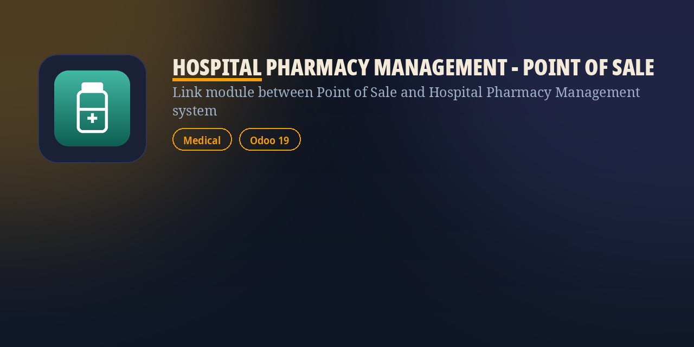

|
A ground-up Odoo 19 Point of Sale integration — settle an unpaid Prescription Order directly at the pharmacy till, with lot tracking and kit products handled correctly. |
🧾 Settle Prescription Orders in POSA "Prescription Order" button on the POS control panel opens a record picker scoped to unsettled orders for the till's configuration. |
🧩 Kit Products on the ReceiptKit medicaments settled from a prescription show their full component breakdown on both the order line and the printed receipt. |
🔢 Lot / Serial PromptingTracked products prompt for lot or serial selection at settle time, exactly like a normal POS sale, so stock traceability isn't lost. |
🔄 Automatic Stock SyncA sync hook reconciles POS order-line quantities against the prescription's stock moves right after the sale posts, keeping delivered and invoiced quantities correct. |
🔗 Linked Order LinesEvery POS order line settled from a prescription carries a back-link to its origin order and line, so the till sale and the clinical record stay traceable. |
📥 Declarative POS Data LoadingPrescription orders and lines load into the POS session through Odoo 19's own data-loading mixin, filtered to draft orders for the active till. |
🔐 Role-Scoped VisibilityThe settle button and linked-orders stat button are gated to the POS user group, matching what pharmacy till staff actually need to see. |
|
Get In Touch
Contact Us |
|
👤
Author
Fawad Hussain
|
🌐
Website
|
✉️
Sales
|
📱
WhatsApp
+92 325 4460867
|
📞
Phone
+92 301 0400131
|
|
Hospital Pharmacy Management - Point of Sale for Odoo 19 · Built by Fawad Hussain / packbytes.com |